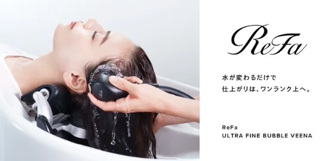

ただのシャワーで、
こんなに違うの？
“特別なことを、当たり前に。”ReFaのウルトラファインバブル「VEENA」導入で、髪も頭皮も仕上がりがワンランク上に。

VEENAを使うとどうなるの？
✔ 髪がつるん。
乾かしただけでまとまる
▶ 髪の中に水分が長く留まり、自然なツヤと指通りに
✔ 頭皮スッキリ。
ベタつきやニオイもリセット
▶ 目に見えない毛穴汚れもウルトラファインバブルで浮かせて落とす
✔ トリートメントの
“入り”が変わる
▶ 髪と頭皮をゼロベースに整えるから、その後の施術効果が底上げされる
Trial
まずは一度、体感してください
VEENAは全メニューに標準搭載。カウンセリング時にお気軽にお尋ねください。


Upgrade
「いつものメニュー」が、
「いつものメニュー」が、
ワンランク上に
VEENAは「オプション」ではなく、お客様全員に行う、施術の土台を整えるステップです。だから、
- ・カラーの発色がキレイに出る
- ・縮毛矯正後のツヤが増す
- ・トリートメントが浸透しやすい
“何かが違う”じゃなくて、“明らかに変わる”感覚。
体感した人のリアルな声
20代 会社員 / 女性
VOICE「マッサージモードのドドドってシャワーだけで、こんなに気持ちいいなんて！落とした汚れを見せてもらったけど、びっくりするくらい汚れが浮いていました！笑 クレンジングされてるおかげかいつもよりトリートメントが長持ちしています！」
30代 主婦 / 女性
VOICE「時間の都合上いつものトリートメントができなかったのに、シャワーを使ってもらったからか髪がすごくやわらかくなりました！最後の仕上げのリラックスモードは水がやわらかく当たって癒されました！乾かした後も頭が保湿されてる感じがします！」
よくある質問
あなたの髪に、違いを感じてほしいから。
RuCOR./umily by RuCOR.では“特別なことを、当たり前に”お客様皆様に提供させて頂きます。
VEENAは、そのはじまりになる存在です。まずは体験してみてください。それだけで、髪も気分も変わりはじめます。